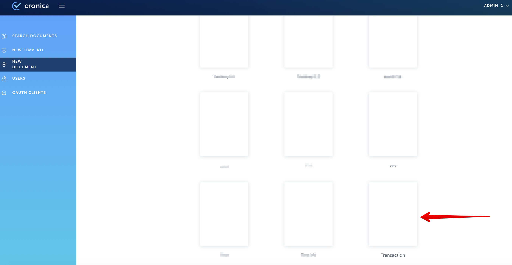
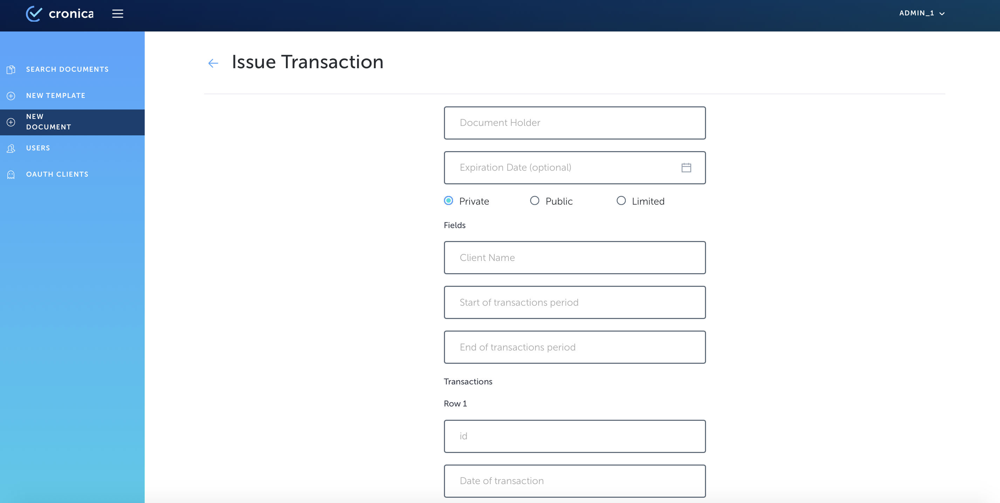
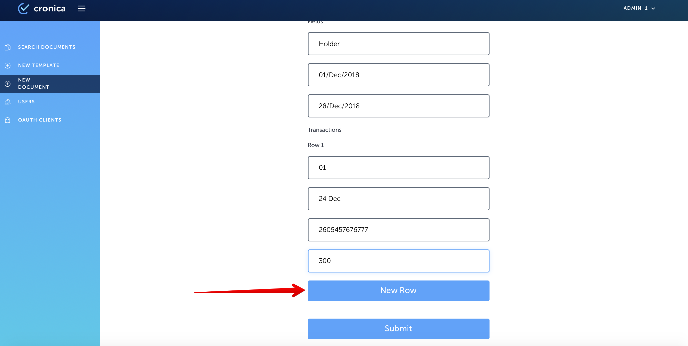

1. Go to the Issuer site of Cronica.io and authorize;
2. Click on ‘New Document’ button on the left side menu;
3. Observe list of available templates;
4. Click on any structured document template (all except ‘Generic’);

5. Observe document creation screen with fields for data entry;

6. Input an appropriate document holder name into ‘Document Holder’ field;
7. Input an appropriate expiration date into ‘Expiration date’ field if needed;
8. Select the type of document availability (‘Private’, ‘Public’, ‘Limited’*);
-
- if you click on ‘Limited’, you have to select appropriate institution from the dropdown list;
9. Complete fields for variables and tables’ rows;
10. If you need to add a row to the table, click on ‘New Row’ button below;

11. Click on ‘Submit’ button, when all the changes to the document are finished;

12. Observe the screen on successful document submission;